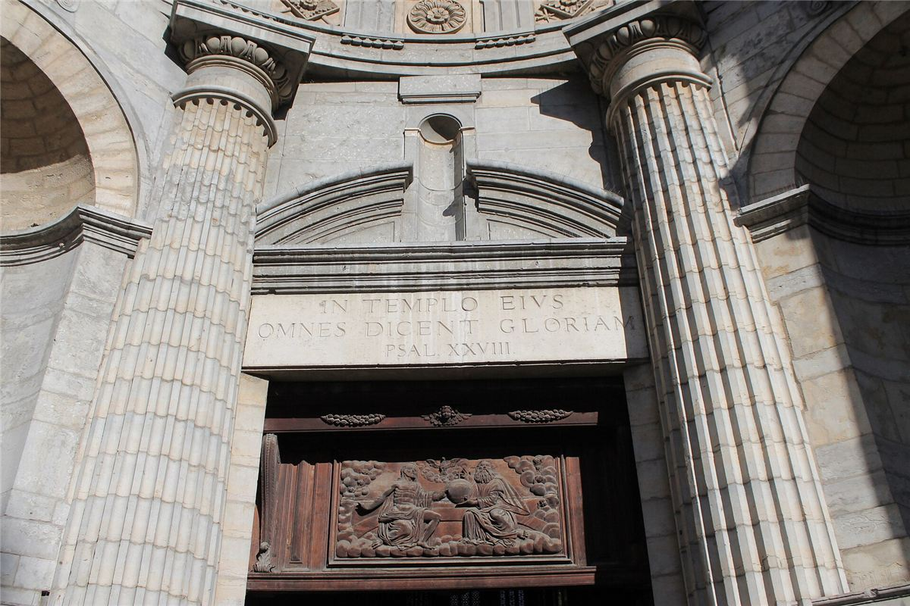

Mamie se souvient des photos dans les journaux : des femmes assises dans les bancs d'une église, avec des pancartes, face aux micros. On parlait toujours d'elles, jamais avec elles. En juin 1975, les prostituées de Lyon ont pris la parole elles-mêmes, et la France entière a dû les écouter.
Le contexte : la rue et la répression
- En 1972, un scandale de corruption entre policiers et proxénètes fait fermer les hôtels de passe de Lyon. Les femmes se retrouvent dans la rue, plus visibles, plus exposées.
- Les amendes pour racolage pleuvent, souvent arbitraires. Au printemps 1975, la justice remet en application des peines de prison ferme pour récidive.
- Beaucoup de ces femmes sont mères. La prison, c'est le risque de perdre la garde de leurs enfants.
- En 1974, trois prostituées sont assassinées à Lyon. Les enquêtes n'aboutissent pas.
2 juin 1975 : l'occupation de Saint-Nizier
Le 2 juin 1975, une centaine de femmes entrent dans l'église Saint-Nizier, en plein centre de Lyon. Pour tromper la police et la presse, elles ont lancé une fausse rumeur de rendez-vous devant une autre église. Le curé accepte de les accueillir. Elles seront bientôt près de deux cents.

Leurs porte-parole, Ulla et Barbara, expliquent leurs revendications aux journalistes :
- la fin des peines de prison pour racolage ;
- la fin des amendes arbitraires et du harcèlement policier ;
- le respect, et la sécurité face aux violences ;
- et un refus net : pas de retour des maisons closes.
Des commerçants du quartier apportent à manger, des militantes féministes et des chrétiens les soutiennent. Le mouvement fait tache d'huile : des églises sont occupées à Marseille, Paris, Grenoble, Montpellier. À Londres, l'occupation inspire la naissance de l'English Collective of Prostitutes.
10 juin : l'évacuation
Le gouvernement refuse de négocier. Le 10 juin 1975, à l'aube, sur ordre du ministre de l'Intérieur, des policiers casqués et accompagnés de chiens évacuent l'église, sans l'accord des autorités religieuses. Ulla est sortie sur une civière, Barbara est malmenée.
Les suites
- Le mouvement continue : « états généraux de la prostitution » à Lyon en juin, « assises nationales » à Paris en novembre 1975.
- Les peines de prison pour récidive de racolage sont amnistiées, et la répression se calme à Lyon pour un temps.
- Un rapport officiel, remis fin 1975, propose de protéger les prostituées et de cibler les proxénètes. Il n'est jamais publié ni appliqué.
- Le mouvement s'essouffle au printemps 1976. Mais le 2 juin est devenu, dans le monde entier, la Journée internationale des travailleuses et travailleurs du sexe.
Chronologie
- 1972Fermeture des hôtels de passe à Lyon après un scandale de corruption.
- 1974Trois prostituées assassinées, les enquêtes n'aboutissent pas.
- Printemps 1975Retour des peines de prison pour racolage.
- 2 juin 1975Occupation de l'église Saint-Nizier.
- Juin 1975Occupations à Marseille, Paris, Grenoble, Montpellier.
- 10 juin 1975Évacuation par la police.
- Novembre 1975Assises nationales de la prostitution à Paris.
Dans ce dossier
- « Rien pour nous sans nous » : le débat qui divise encore les féministes.
Sources et pour aller plus loin
Lire
- Une vie de putain, Claude Jaget, 1975.Six témoignages de prostituées recueillis au moment du mouvement.
Regarder
- Les prostituées de Lyon parlent, Carole Roussopoulos, 1975.Un documentaire tourné dans l'église occupée, avec les femmes elles-mêmes.
Sur le web
- L'occupation de Saint-Nizier sur WikipédiaLe contexte, les huit jours, les suites.
Dossier rédigé par la bande à Mamie à partir de travaux d'historiennes et d'historiens et de textes des mouvements concernés. Libre de reproduction.